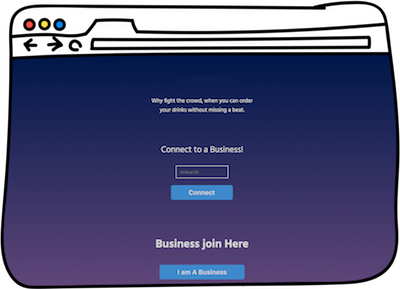

Hello world!
I’m a full-stack web developer based out of sunny Orlando, FL.
In a previous life, I was a Digital Marketing Strategist until I got inspired to build my own landing pages and forms and decided to take control of my work and learn web development
But life is more than just work. It wouldn’t be healthy, otherwise!
So, when I step away from my computer, you’ll find me with my family and friends. Behind the lens of my camera. Attempting to exercise. Or learning something new (I’m an online tutorial junkie. Shh, it's our secret.)
I volunteer too. On weekends I visit assisted living facilities with my dog Fred, who recently got certified as a therapy dog.
Portfolio
Q-less web app
Q-less is a web app that allows clients to connect with a bar and place their drink orders.
Hate is a strong word, but I really-really-really dislike having to fight my way through the crowd to get to the bartender. And when I finally get to him/her I have to yell my order back and forth until they get it. On the other hand, it can’t be easy on the bartender either. How can they even keep track of who got there first? If they leave someone waiting for a long time, I bet their tip will not be great.
At the moment, Q-less, previously known as Drunk Fast (what were we thinking, right?), offers two main components:
First, it allows users to access an establishment's drink menu from their phone and place an order.
Second, it provides establishments a platform to customize their menu and receive orders from their customers via the app.
Q-less mobile app

Because most people don’t find it very convenient to take their laptops to the bar, a mobile app was in order here. In this version of Q-less, the focus was on the client (the person purchasing their drinks). Via the app they can gain access to an establishment's drink menu and place an order.